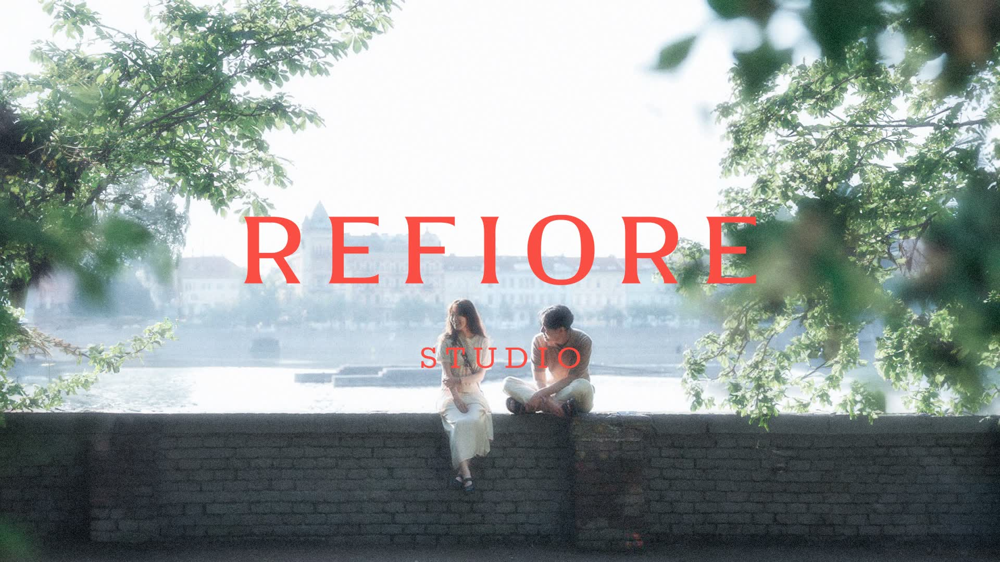
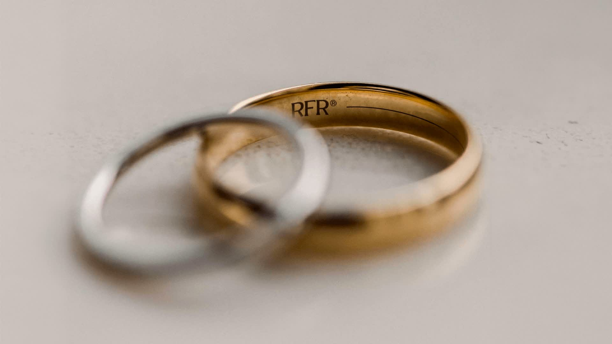
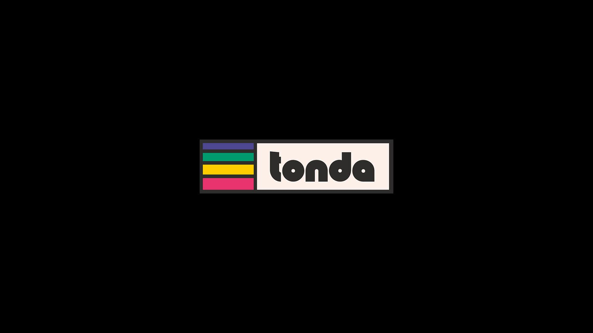
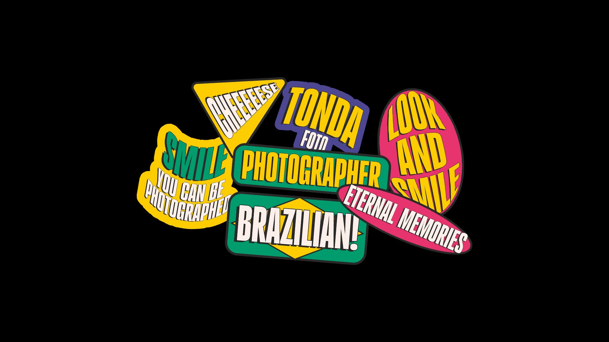
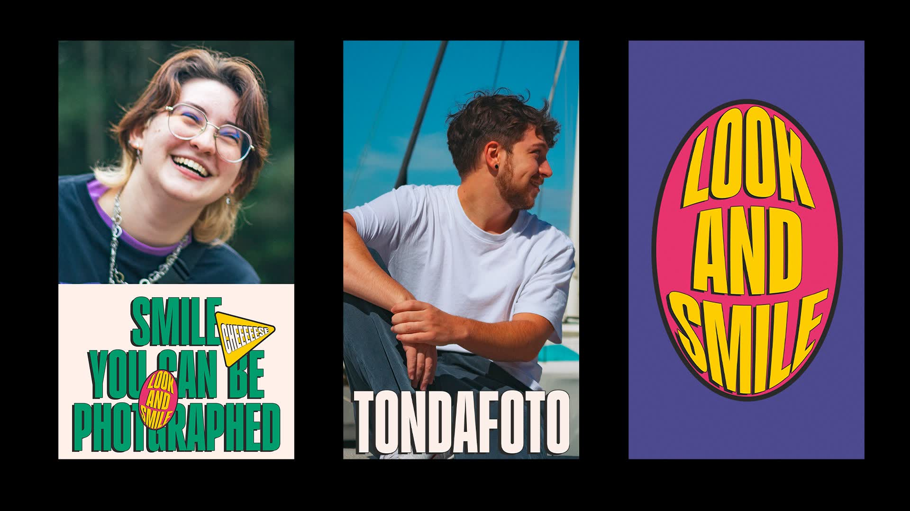
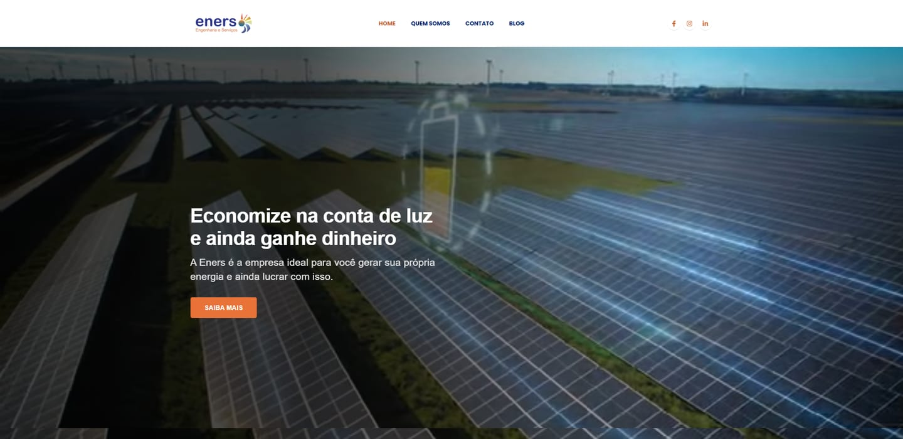
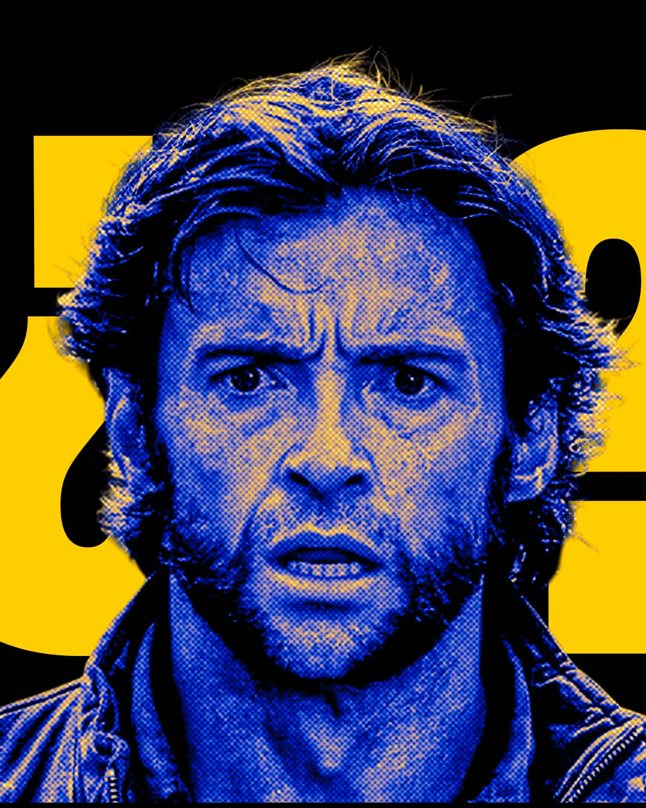
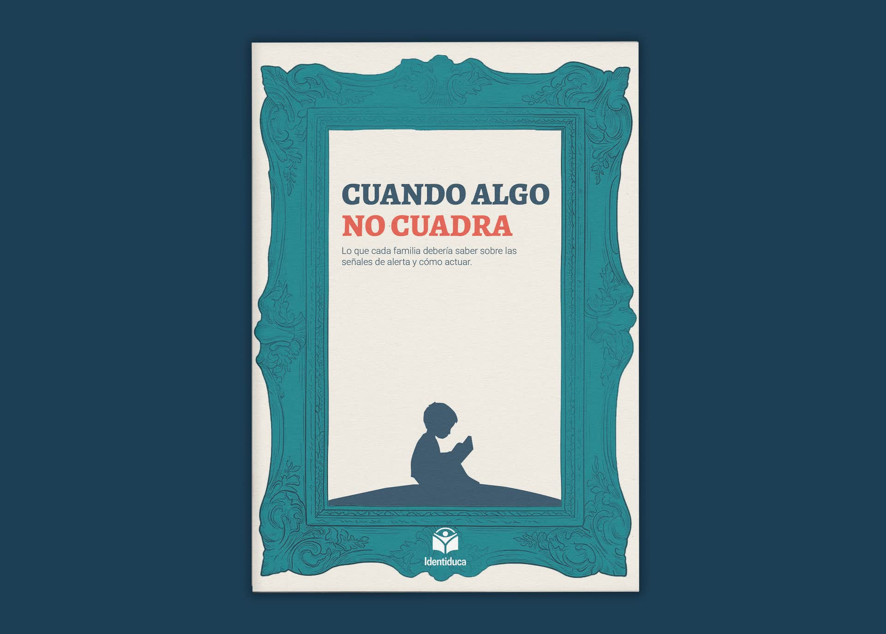
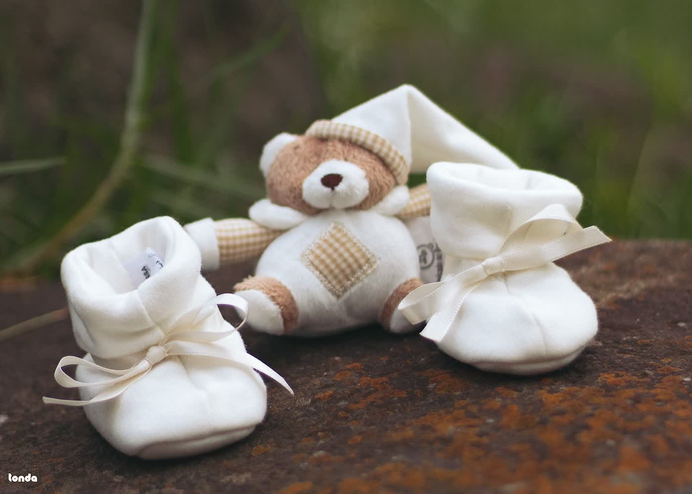
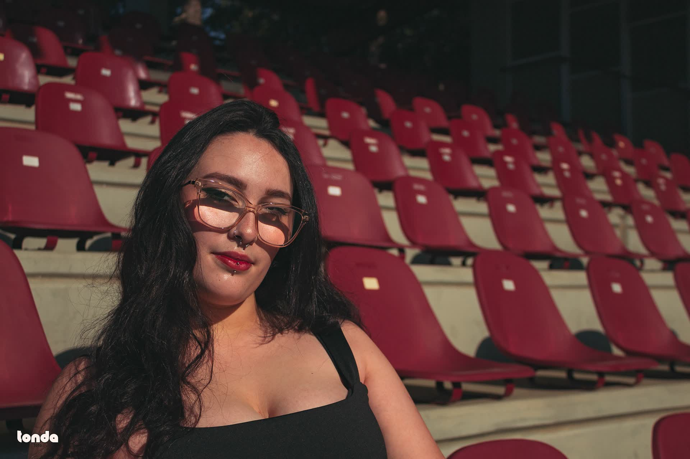

Portfolio
Branding


Refiore - Joyería artesanal

Wotë - Cannabidiol



Tondafoto - Marca personal
Web Design

Eners - Sitio institucional

Identiduca - Sitio institucional
Artes Gráficas


Gauja Lab - Social media

Identiduca - Zine editorial
Fotografía

Aline & Eduardo - Ensayo de embarazo

Carol - Retrato femenino


Valeria - Retrato femenino